1 SATRAP SWD-SATRAP
Software design artifacts for the SATRAP CTI analysis platform.
1.1 Top-level ETL design SWD-001
Abstract class diagram
The top level design of the ETL system, i.e., the software design of implementation independent components, is depicted below
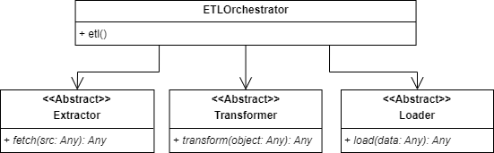
An Extractor is responsible for fetching raw data. At this stage, the retrieved data is not transformed yet. The data can for example be downloaded and saved to a file, but reading from a file and returning the data internally is also possible.
A Transformer will then take the extracted data and transform it into another format. This could for example consist of converting date formatting or a transformation of complex numbers from the algebraic form to the polar form, to give two simple examples.
The Loader will load the data that has been prepared by the transformer into another data repository. Often, this means that data is loaded into a database.
These 3 components are managed by the ETL Orchestrator, i.e., it uses them to get the desired result. This is the abstract and implementation independent idea of the ETL process.
satrap/etl/etlorchestrator.py(line 12)satrap/etl/extract/extractor.py(line 18)satrap/etl/transform/transformer.py(line 15)satrap/etl/load/loader.py(line 11)
Parent links: ARC-001 SATRAP: System structure overview, ARC-002 Logical view of SATRAP, ARC-003 ETL high-level design, ARC-004 ETL components
1.2 STIX-specific ETL design SWD-002
STIX-specific ETL class diagram
A concrete class definition aimed at ingesting data form sources in STIX 2.1 is depicted below. This classes implement and inherit from the abstract classes depicted in SWD-001.
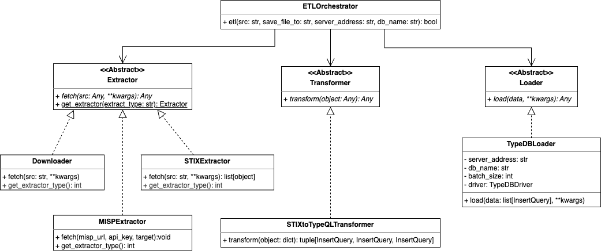
For instance, to provide an implementation of the ETL process to ingest MITRE ATT&CK data in STIX 2.1 format, transform and load into a TypeDB database with a schema close to STIX 2.1, concrete implementations of the ETL classes are required.
For this, we use 2 extractors, namely a Downloader which downloads a file and saves it and a STIXExtractor which reads a STIX 2.1 JSON file and provides its content as Python objects.
Then, a transformer called STIXtoTypeQLTransformer will take these STIX 2.1 objects and transform them to TypeQL insertion query objects according to the defined schema.
After the transformer has finished its work, the TypeDBLoader can take these insertion query objects and insert them into the TypeDB database instance.
satrap/etl/extract/extractor.py(line 57)satrap/etl/extract/extractor.py(line 111)satrap/etl/transform/transformer.py(line 30)satrap/etl/load/loader.py(line 25)satrap/etl/etlorchestrator.py(line 12)
Parent links: ARC-003 ETL high-level design, ARC-004 ETL components
1.3 ETL system flow SWD-003
The sequence diagram below depicts the interaction of the ETL Orchestrator with the concrete classes shown above for a complete extract-transform-load process execution.
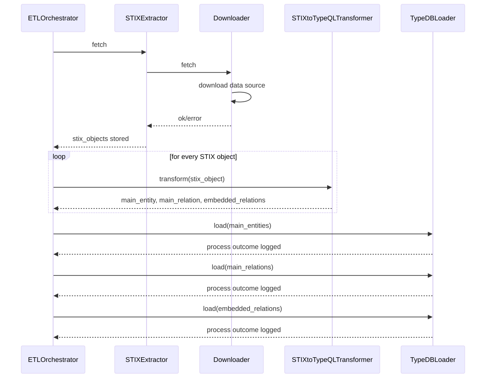
The MITRE ATT&CK data file is downloaded by the Downloader. Then, the STIX objects are read and parsed by the STIXExtractor. With this, the extraction process is completed.
Next, the STIXtoTypeQLTransformer transforms each STIX Object into TypeDB insert queries.
Once they are transformed, they are loaded into a TypeDB database by the TypeDBLoader in 3 steps. First, entities that represent STIX objects, then relations that represent STIX objects and at last relations that represent embedded relations.
Parent links: ARC-003 ETL high-level design, ARC-004 ETL components
1.4 TypeDB utilities SWD-004
As the ETL process will load the data into a TypeDB database, dedicated functionality for TypeDB objects is required. Instead of hardcoding this functionality like string creation for the insert queries into the main ETL components, a separate typedb package is created that handles all functionality that is only TypeDB functionality and can be used in more contexts than just ETL systems.
A class diagram for a full overview is provided below:
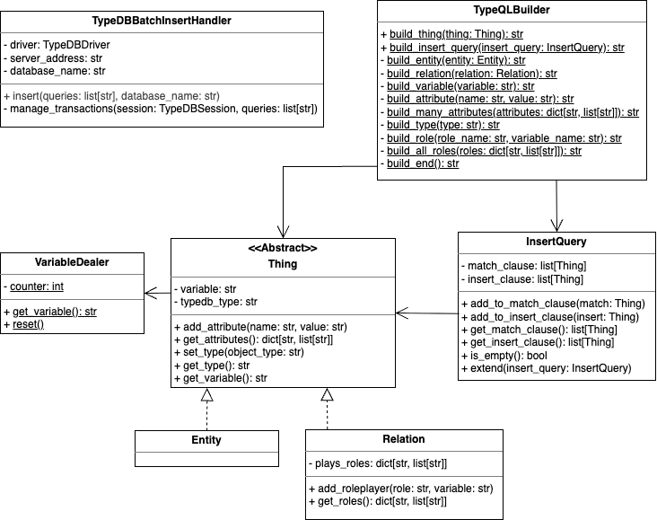
VariableDealer This class has two static functions get_variable and reset. The VariableDealer is responsible for distributing variables for TypeQL queries that are always unique. This is required so different statements in a single insert query do not affect each other
Entity & Relation The Entity and the Relation classes represent TypeDB’s entity and relation objects. The classes are mainly data classes. They have a common supertype Thing analogous to TypeDB’s thing type (which is deprecated and will be removed in TypeDB 3.01) that has the functionality for assigning variables and attributes. In addition, relations have roles and roleplayers.
InsertQuery The InsertQuery data class represents insert queries that consist of match and insert statements.
TypeQLBuilder The TypeQLBuilder builds queries as strings for certain TypeDB Objects. For example it can build the string representation for InsertQuery objects.
TypeDBInserter The TypeDBInserter handles insertions into a TypeDB database with its insert method. For communication with the database, it makes use of the official TypeDB driver package. There are two ways to use this class, either in a with block or as usual. The usage in the with block automatically takes care of creating and closing the TypeDBDriver connnection, while using the Inserter without the with block allows using it when the driver has already been set up by another class or is still needed after the inserter finished his work. The insertion queries are passed as strings.
satrap/datamanagement/typedb/inserthandler.py(line 8)satrap/datamanagement/typedb/dataobjects.py
Parent links: ARC-003 ETL high-level design, ARC-004 ETL components
1.5 Transformer class diagram SWD-005
Design ideas
In the ETL stack, the transformation process is arguably the most complex one. For every STIX Object, we need to define how to translate it to the defined TypeDB object. A partial class diagram of the Transformer is given below, but note that only the most important functions are listed and sometimes, function signatures are left out in case they can be determined by inheritance. The complete diagram can be found further below.
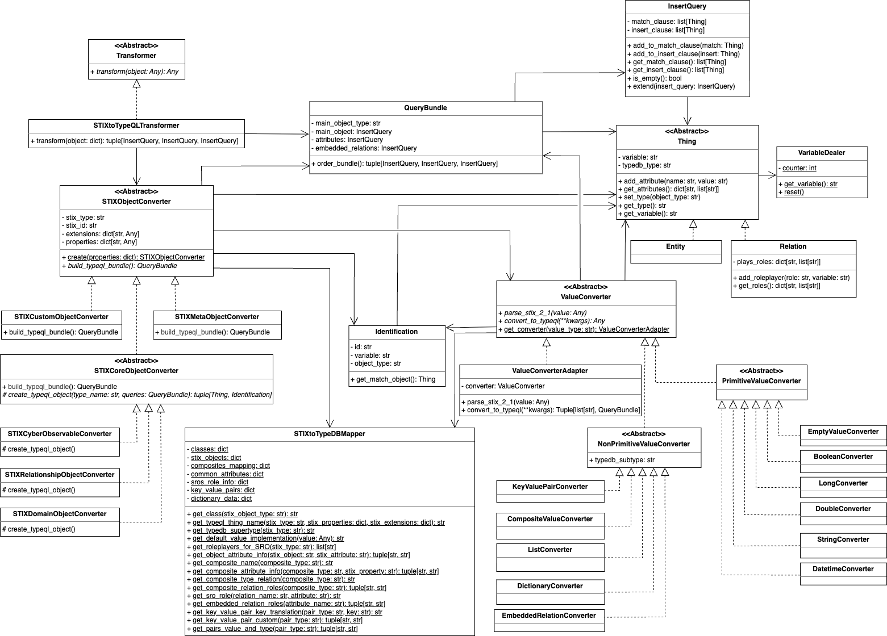
The idea of the transformer for STIX 2.1 to TypeDB is that it transforms each STIX object in sequence. Thanks to our TypeDB schema being very close to STIX 2.1, this process is simplified. It also allows for concurrency in case a sequential implementation is too slow. For this, the Transformer instantiates a STIXObjectConverter subclass (for each STIX object) that knows how to transform the underlying STIX Object. This class holds the main functionality of the Transformer. We distinguish between SDOs, SROs, SCOs, SMOs, and Custom Objects, primarily because SROs will create relations while SDOs and SCOs create entities and SMOs may rely on individual conversion techniques. Currently, only STIX Core Objects are implemented. They have a common Converter superclass STIXCoreObjectConverter.
When the convert_to_typeql method is called, this converter will
- determine the TypeDB object type and initialize the entity/ relation
- convert the main properties
- convert the properties of the extension if one exists
For step (1), the Converter will determine the TypeDB object type using the STIXtoTypeDBMapper and will then initialize the TypeDB object that represents the STIX object. The method that is used here is defined for each subclass of the STIXCoreObjectConverter as the object depends on the STIX category. So for SDOs and SCOs, entities are created, and for SROs, relations are created. Here, the Converter makes use of the Entity and Relation data classes from the typedb package.
For (2), the Converter iterates over the STIX properties and determines with the help of the STIXtoTypeDBMapper how to transform each attribute, i.e. which name and which value type to use for the TypeDB attribute. For the conversion of the values, the ValueConverter is used. For each value type, a dedicated subclass is defined. These subclasses then know how to interpret and convert the value from STIX 2.1 JSON to the TypeDB implementation.
The third step (3) works similar to the property conversion (2) as the extension has already been considered in step (1) for the object type, so again, only properties have to be converted.
The most challenging part is the building and execution order of the insert queries. The data class InsertQuery, that stores the match and insert statements as entities or relations, is not enough here. A mechanism is needed to determine which parts of the query can be executed at which time. Embedded relations, for example, match on a different object by an id. However, it is possible that this referenced object has not yet been inserted into the database. Therefore, some statements have to wait. Also SROs can only be safely inserted once every other STIX Object has been inserted. Therefore, a class called QueryBundle is used that distinguishes between the main STIX Object, entities and relations that represent more complex attributes, such as an external-reference, and embedded relations.
The order is as follows: First, all STIX Objects that are translated as entities have to be inserted (e.g. SDOs), then all STIX objects that are relations (these are SROs) can be inserted and at last, the embedded relations may be inserted (because embedded relations can also reference SROs). The entities and relations that represent attributes have to be inserted after, but in the same query as the main STIX Object, because these entities do not have ids and can therefore not be uniquely matched later on.
After the transformation process finished, insert query objects are returned instead of insert query strings. The objects can be turned to strings with a single function call to the TypeQLBuilder, using the build_insert_query function. But this step is done in the loader to keep some flexibility here. For more explanations to this topic, please see the loading chapter.
Mapping
There are many STIX Objects and much more properties defined on them, as well as extensions. Therefore, it needs to be stored somewhere how to transform each STIX object, e.g. which attribute names to choose for the STIX properties. These information are stored in separate mapping files in the JSON format. The STIXtoTypeDBMapper class handles these files. Other classes can then call its functions to get these information, e.g. they can ask for the attribute name of a STIX property of a certain STIX object type. For more information, please see the Mapping chapter in the implementation part.
Class diagram explainer
- STIXObjectConverter
- The STIXObjectConverter converts a whole STIX Object to the necessary TypeQL insertion queries. During this process, it uses other components such as the
ValueConverterfor converting its attributes. Each subclass takes care of the conversion of a complete STIX Object class. - ValueConverter
- The ValueConverter is responsible for converting a single value from STIX 2.1 to TypeDB. Because some values translate to more complex structures, such as relations, not only values are returned, but whole insertion queries, too. The subclasses represent a value type each. The
StringConverterfor example converts values in JSON String format to TypeDB string values, while theCompositeValueConvertertakes care of values that are structured, i.e. consist of several values, such as external references. - ValueConverterAdapter
- As the return types of the ValueConverters'
convert_to_typeqldiffer, the ValueConverterAdapter is responsible for creating a tuple of values and QueryBundles for each ValueConverter such that the STIXObjectConverter does not need to take care of type matching. - STIXtoTypeDBMapper
- The STIXtoTypeDBMapper takes care of accessing the mapping that defines for each object, attribute, relation and composite type how it should be transformed, i.e. which names and values are used in the corresponding TypeDB element.
- QueryBundle
- The QueryBundle collects insert queries that are created by the ValueConverters needed to insert the transformed values. In contrast to simple lists, the QueryBundle takes care of sorting the insert queries correctly such that insert queries are inserted in the correct order. This is for example important for inserting embedded relations after the referenced object has been inserted.
- Identification
- Some ValueConverters need to know the TypeDB object type of the main object or their id. For this, the
Identificationclass is used. This class contains all the data needed to create different references to the main object.
Parent links: ARC-003 ETL high-level design, ARC-004 ETL components
1.6 Transformer flow SWD-006
Transformer sequence diagram
The sequence diagram of the transformation process can be seen below:
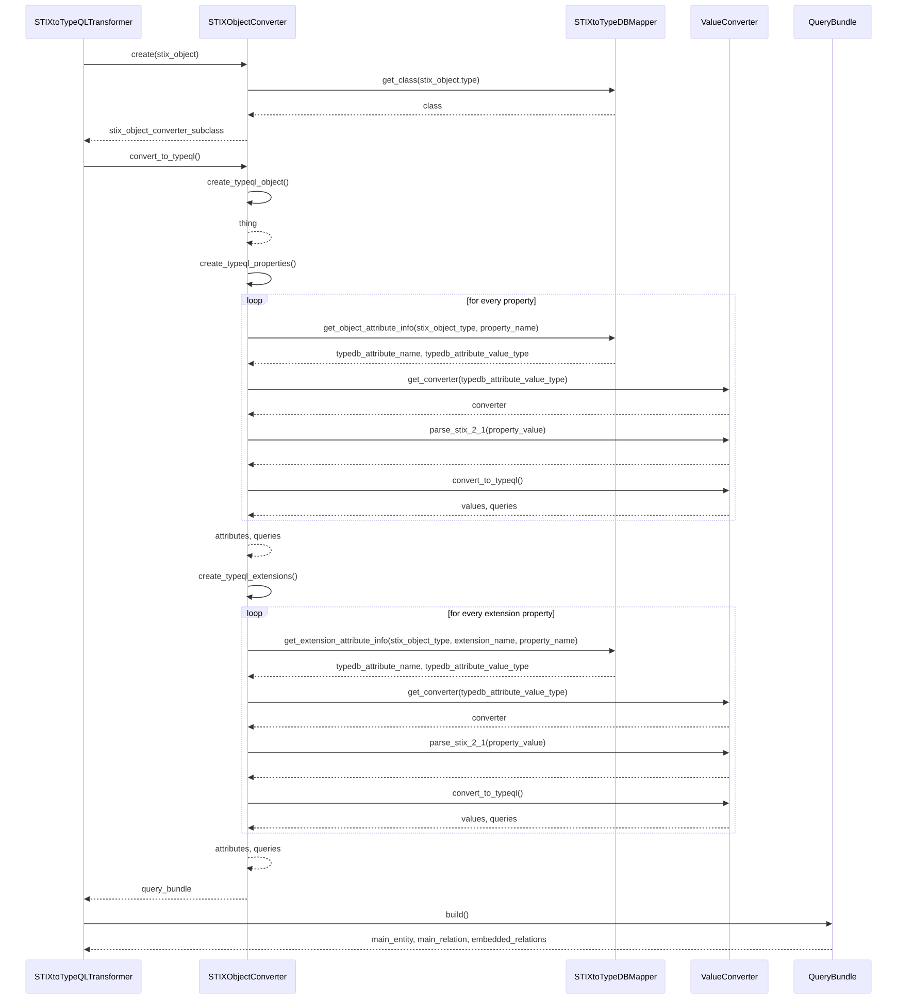
Only function calls and interactions that are relevant to understand the information flow are shown. Especially interaction with plain data classes that are not used by the STIXtoTypeQLTransformer itself are left out, i.e. the creation of Entity or Relation objects that are inserted into InsertQuery objects which are again part of the QueryBundle. In addition, the convert_to_typeql functions differ a lot depending on the value type. For primitive data types, the functions indeed do not interact with other classes. However, for more complex data types, the ValueConverter interacts with the STIXtoTypeDBMapper to ask for information about the conversion steps and of course with the Identity, Entity, Relation, InsertQuery and therefore also with the QueryBundle.
To provide an example, the sequence diagram for a function call of convert_to_typeql of a composite value can be seen below:
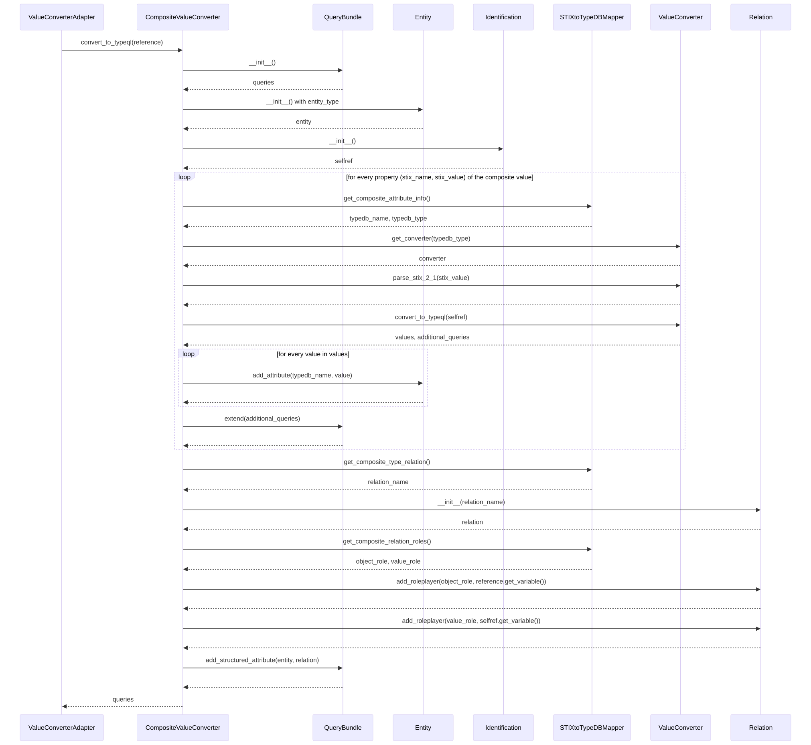
It can be seen that for every value in a composite value's properties, the ValueConverter is needed to convert the value. This is not shown in this sequence diagram as this sequence diagram already explains this step.
Parent links: ARC-003 ETL high-level design, ARC-004 ETL components
1.7 ETL full class diagram SWD-007
The full class diagram of the ETL is given below.
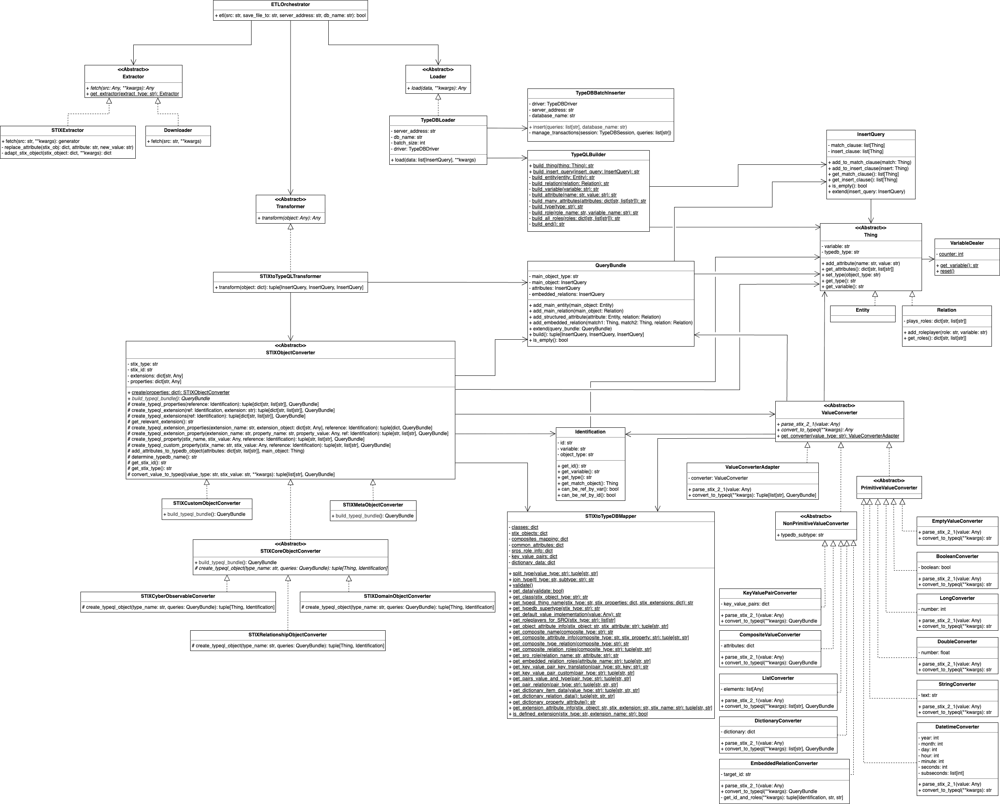
Parent links: ARC-003 ETL high-level design, ARC-004 ETL components
2 DECIPHER SWD-DECIPHER
Software design artifacts for the DECIPHER REST service.
2.1 DECIPHER REST service component diagram SWD-011
This diagram expands the container diagram in ARC-008 at package level. Each node inside the DECIPHER boundary represents either a Python package or a top-level module; arrows show the direction of the call or data dependency.
The two primary entry points exposed by api correspond to the analysis flow (triggered by RADAR or an analyst via POST /analyze/{alert_type}) and the incident creation flow (triggered via POST /incident). In the analysis flow, analyzers orchestrates IOC enrichment through commons.misp_connector, feeds raw CTI event data to scoringengine to compute a severity score, and optionally delegates case creation to casemanagement. In the incident flow, incident_service resolves the optional template against casemanagement.template_catalog before calling casemanagement.flowintel_connector directly. The commons and settings packages provide cross-cutting infrastructure (logging, configuration, external client wrappers) consumed by all other packages.

Parent links: ARC-008 DECIPHER microservice container diagram
2.2 Analysis layer class diagram SWD-012
This diagram expands the Analysis Layer node from SWD-011 into a UML class diagram, showing the concrete classes, their relationships, and the key attributes and operations exposed by each.
AnalyzerRegistry is the single static dispatcher: it holds class and instance registries keyed by alert_type and routes every analysis request. BaseAnalyzer defines the mandatory contract every analyzer must satisfy — a class-level alert_type string, a class-level schema (a Pydantic BaseModel subclass), and an abstract analyze() operation. SuspiciousLoginAnalyzer is a concrete implementation; it inherits MISPEnrichmentMixin to acquire lazy-initialised access to MISPDataExtractor. SuspiciousLoginAlert is the Pydantic input schema bound to that analyzer.
AnalysisResult (from decipher.models) is the uniform return type of every analyze() call and the response schema of the /analyze endpoint.

Parent links: ARC-008 DECIPHER microservice container diagram
2.3 Analysis endpoint flow SWD-008
The sequence diagram below depicts the flow of a CTI analysis request, from the initial POST request to the /analyze/<alert_type> endpoint to the final response containing the analysis results.
Successful flow
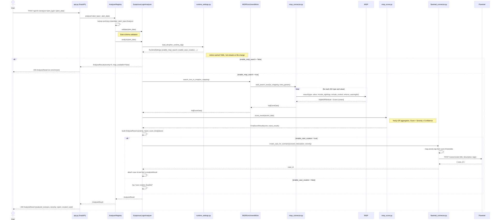
Erroneous paths
Five error scenarios are distinguished by fault origin. Scenarios 1 and 2 terminate before the analyzer is invoked. Scenarios 3 and 4 return 200 with score 0. Scenario 5 returns 200 with no case link.
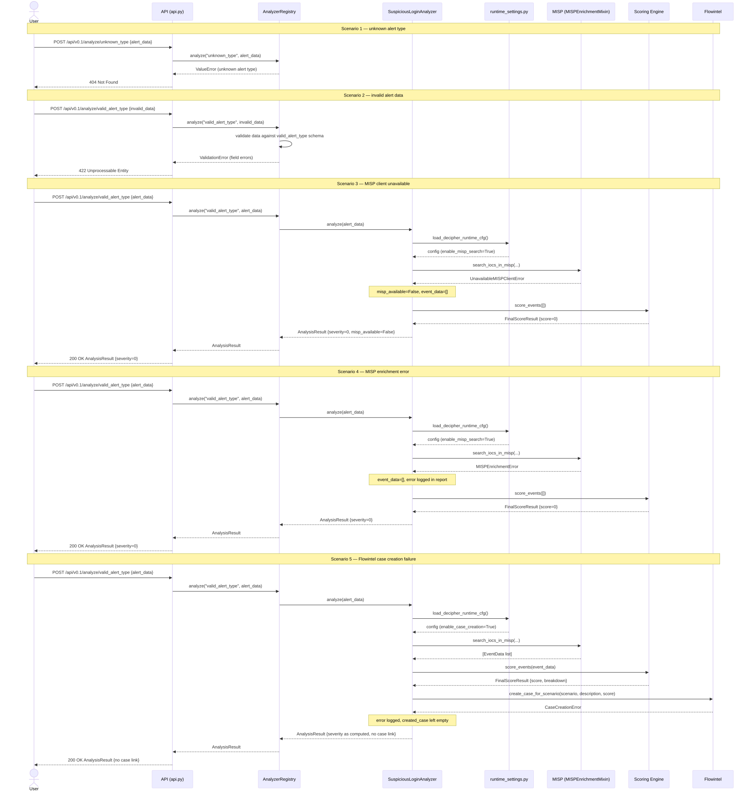
Parent links: ARC-009 REST service: analysis endpoint interaction
2.4 Analysis endpoint: suspicious_login request flow SWD-010
The sequence diagram below details the successful flow for POST /api/v0.1/analyze/suspicious_login. The Flowintel case creation step is abstracted as a single interaction; The erroneous paths correspond to those detailed in SWD-008.
The data schema bound to the suspicious_login alert type is SuspiciousLoginAlert as shown in SWD-013.
Preconditions: alert data passes schema validation, MISP search is enabled and reachable, case creation is optionally enabled or disabled per configuration.
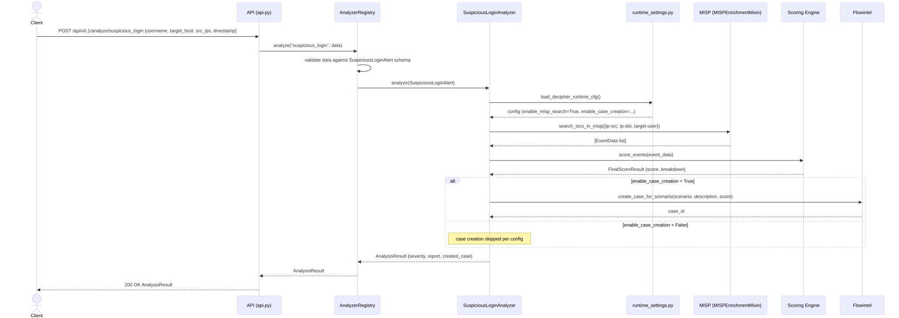
Parent links: ARC-012 Analysis endpoint: support for suspicious login
2.5 Incident endpoint class diagram SWD-013
The diagram below shows the classes, functions, and data models involved in the POST /incident request.

Parent links: ARC-008 DECIPHER microservice container diagram
2.6 Incident endpoint flow SWD-009
The diagram below details the full request lifecycle of POST /incident, including required validations and error paths.
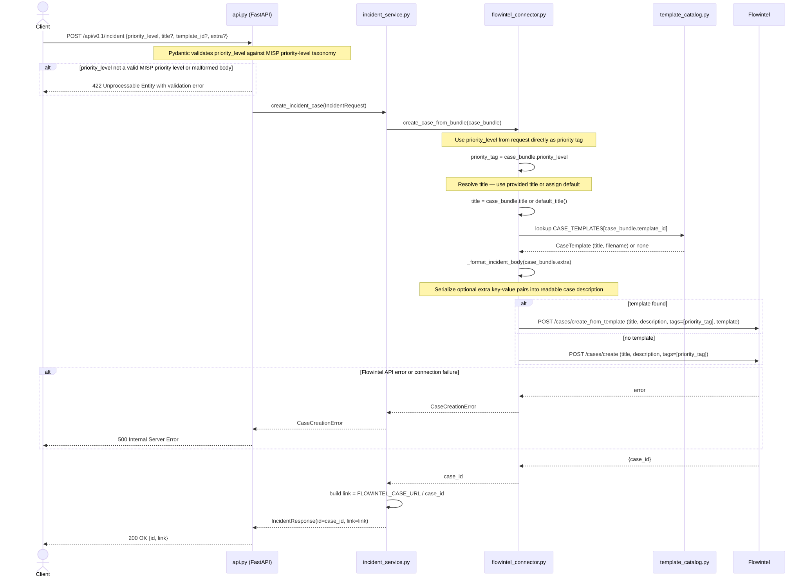
Parent links: ARC-011 REST service: incident endpoint interaction
2.7 DECIPHER microservice data model SWD-014
The diagram below shows the data schemas used across the DECIPHER microservice. These include models for API request and response validation, as well as the dataclasses used in the scoring engine. The relationships between these models are also depicted, illustrating how data flows through the system from input to analysis results.

Parent links: ARC-008 DECIPHER microservice container diagram, ARC-010 Analysis endpoint: scoring data flow diagram